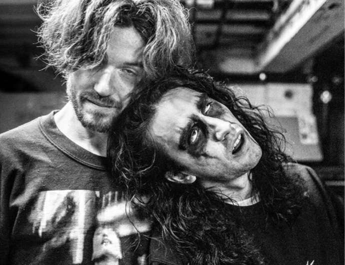

10.12.2022
Machine Girl
Machine Girl (sometimes stylized as machin3gir1) is an American electronic music project created in 2012 by Matt Stephenson on Long Island, New York.
Founded in 1982, Alvin is a bar in the center of Berlin well known for its techno music and open minded frenquentations. Concerts, cocktails, hypnotic rythms… All you need for a night out.
Machine Girl (sometimes stylized as machin3gir1) is an American electronic music project created in 2012 by Matt Stephenson on Long Island, New York.
Machine Girl (sometimes stylized as machin3gir1) is an American electronic music project created in 2012 by Matt Stephenson on Long Island, New York.